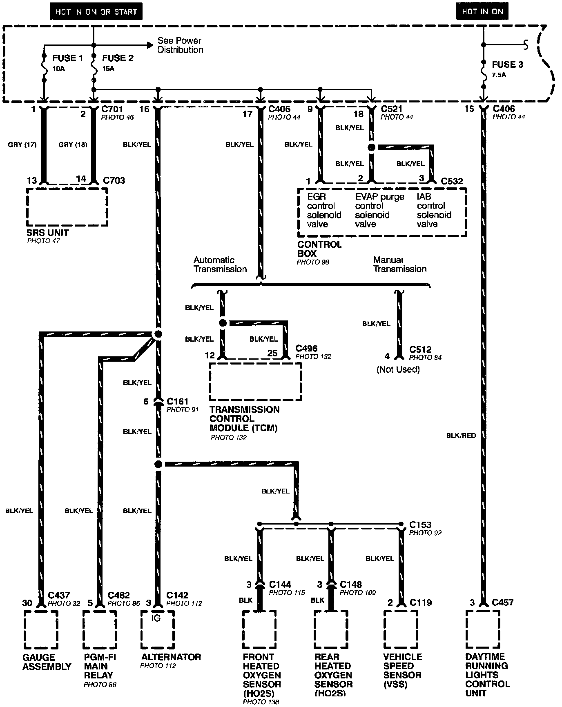
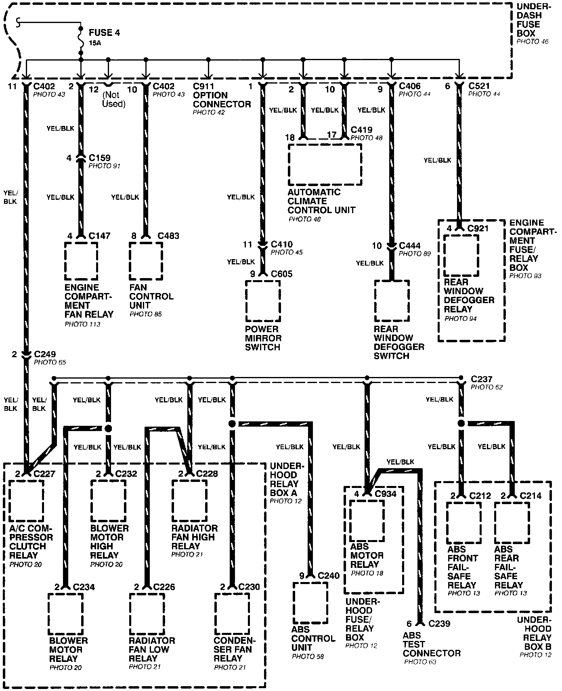
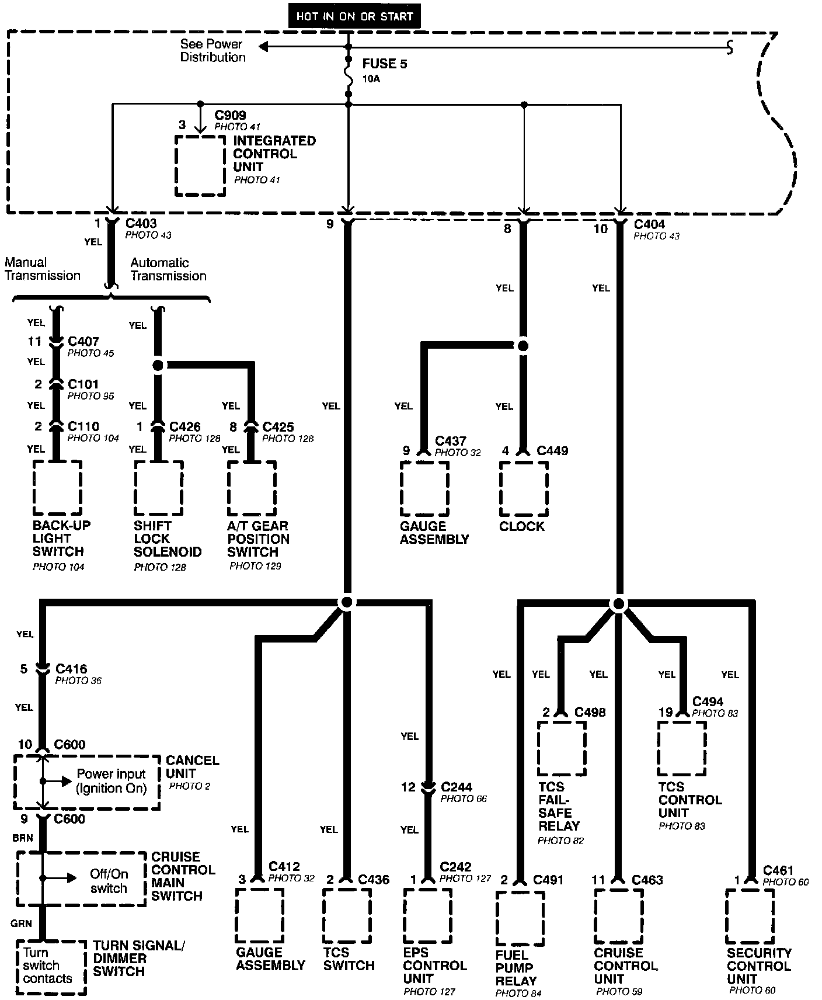
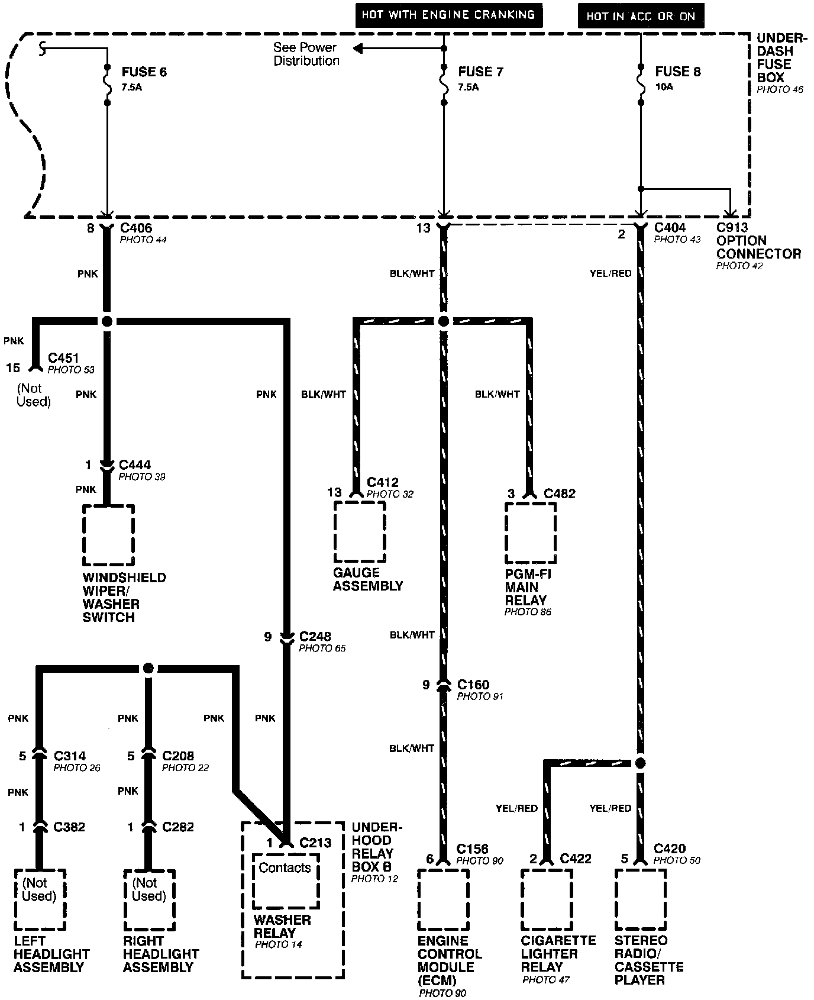
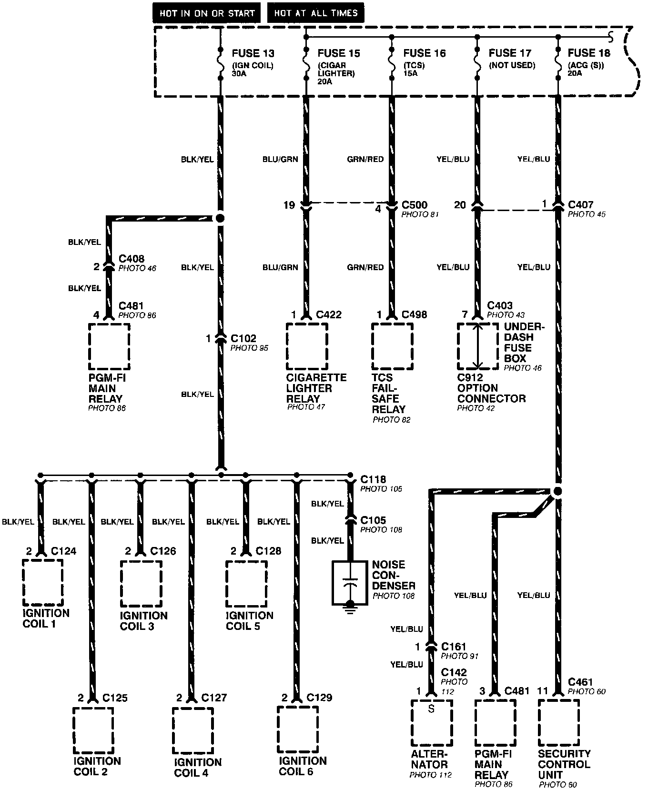
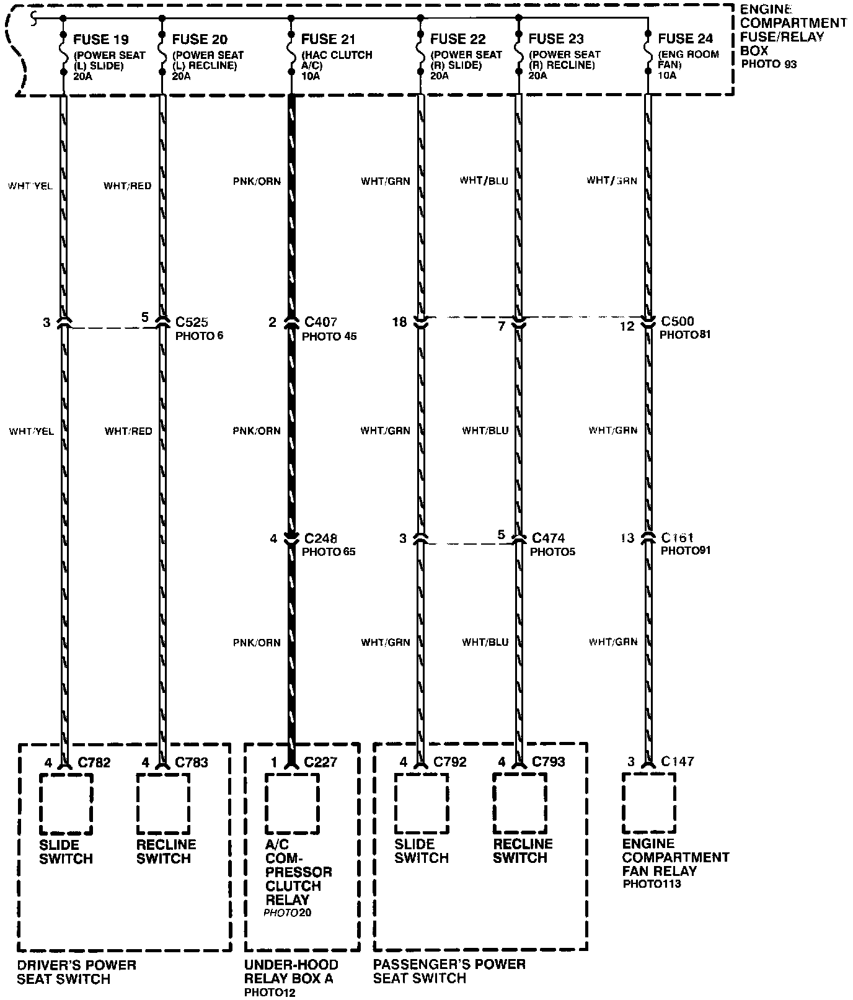
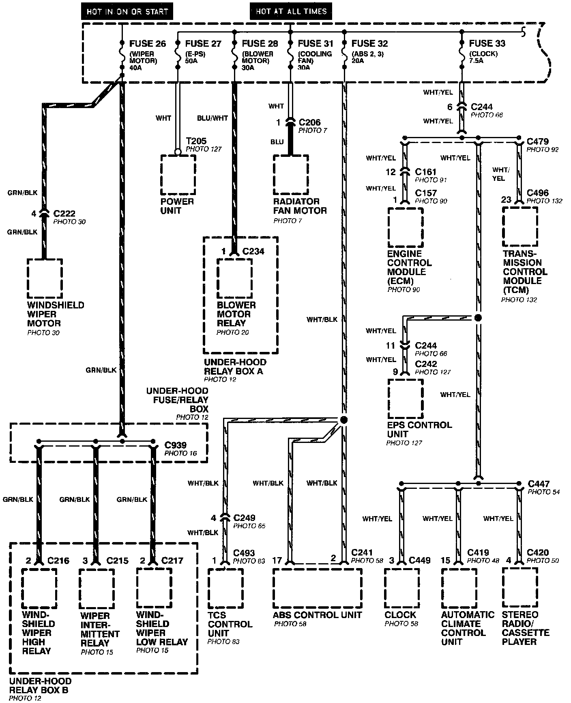
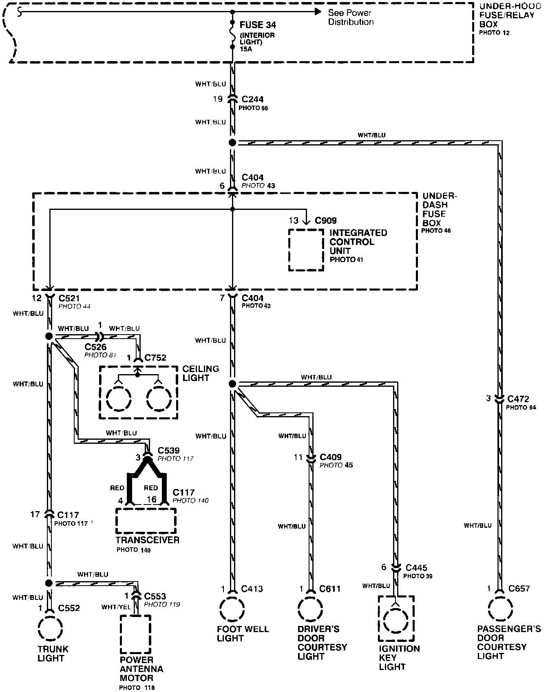
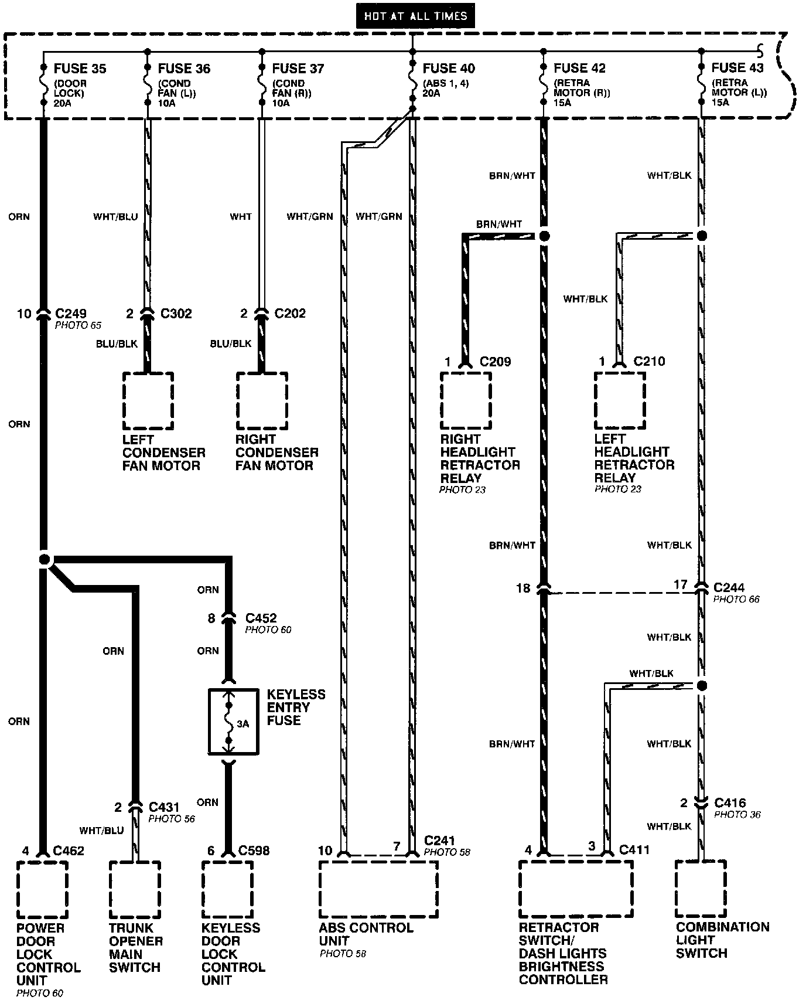
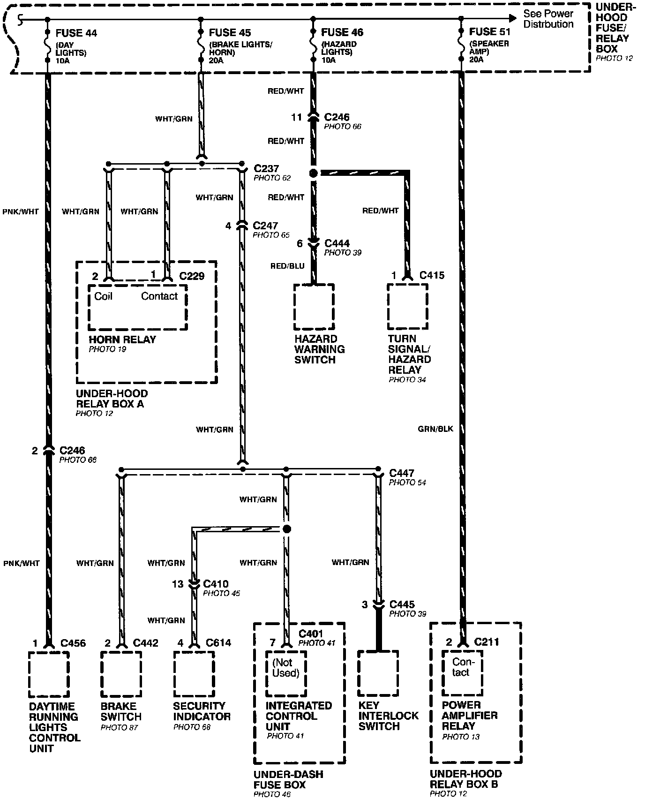

From Fuses to Relays and Components
Power Distribution - From Fuses To Relays And Components (Part 1 Of 10):

Power Distribution - From Fuses To Relays And Components (Part 2 Of 10):

Power Distribution - From Fuses To Relays And Components (Part 3 Of 10):

Power Distribution - From Fuses To Relays And Components (Part 4 Of 10):

Power Distribution - From Fuses To Relays And Components (Part 5 Of 10):

Power Distribution - From Fuses To Relays And Components (Part 6 Of 10):

Power Distribution - From Fuses To Relays And Components (Part 7 Of 10):

Power Distribution - From Fuses To Relays And Components (Part 8 Of 10):

Power Distribution - From Fuses To Relays And Components (Part 9 Of 10):

Power Distribution - From Fuses To Relays And Components (Part 10 Of 10):
